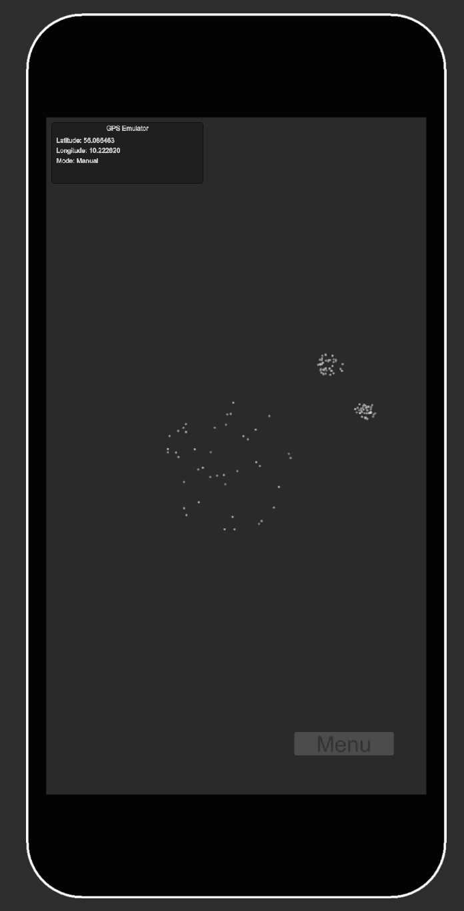
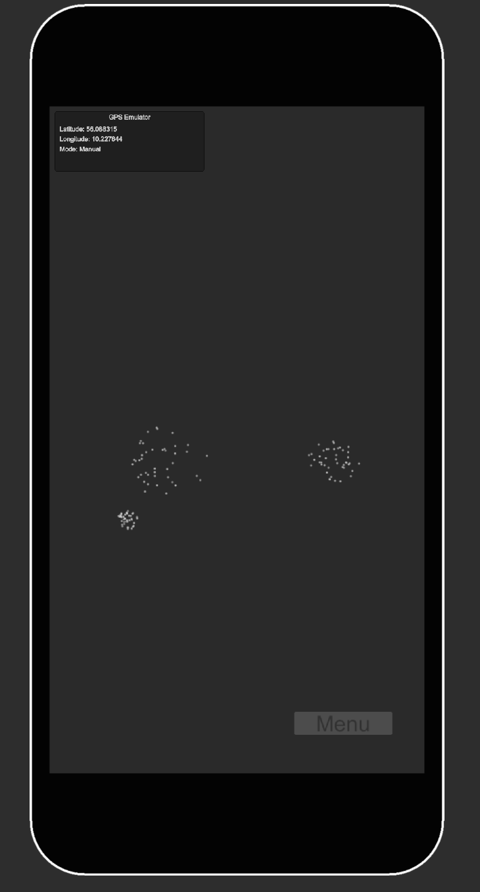

Gæsten tager høretelefoner på, starter oplevelsen og kan lægge telefonen i lommen.
LOKATIONSBASERET LYDAPP · GPS + BEACONS
Et lydværk, der ændrer sig, når gæsten bevæger sig.
SUS er en app til natur-, kultur- og byrum. Gæsten tager høretelefoner på, starter oplevelsen og kan lægge telefonen væk. Position og afstand former musik, stemmer og lydscener i realtid.
00 / PRODUKTET
Helt konkret: Et fysisk sted bliver til et interaktivt lydværk.
Hver lokation får sit eget lydindhold. Når en gæst går gennem området, registrerer systemet løbende, hvor personen er, og ændrer lydoplevelsen efter bevægelsen. Derfor hører man ikke bare et færdigt spor fra start til slut — selve ruten gennem stedet former afviklingen.
GPS følger den overordnede position og afstand. Beacons kan supplere med mere præcis lokal nærhed.
C# omsætter positionsdata til kontinuerlige parametre og geografiske zoner.
FMOD blander, ændrer og aktiverer musik, stemmer og lydscener ud fra den aktuelle bevægelse.
IKKE EN PLAYLIST · IKKE EN LINEÆR AUDIOGUIDE
Der er ingen fast tidslinje, som alle følger ens. Gæstens fysiske bevægelse er selve styringen af oplevelsen.
01 / KONCEPTET
Skærmen skal ikke være destinationen.
PARADOKSET
Vi søger ro — og ender foran en skærm.
Natur- og kulturoplevelser konkurrerer ofte med den samme telefon, der skal guide os gennem dem. Resultatet kan blive et fraværende nærvær: kroppen er på stedet, mens opmærksomheden er et andet sted.
LØSNINGEN
SUS lader stedet styre oplevelsen.
Gæsten behøver ikke følge et kort eller trykke sig gennem indhold. Lyden ændrer sig automatisk med position og afstand, så opmærksomheden kan blive på omgivelserne. Det digitale lag reagerer på kroppen i stedet for at kræve skærminteraktion.
02 / SÅDAN FUNGERER DET
Se systemet i brug.
Prototypen ved Utterslev Mose består af 24 rytmiske, melodiske og teksturelle lydlag. GPS-data styrer afstandsparametre og geografiske zoner, som ændrer kompositionen i realtid.
01
Position registreres
Unity henter GPS-positionen løbende, mens gæsten bevæger sig gennem området. Telefonen behøver ikke bruges aktivt undervejs.
02
Bevægelse bliver data
C# beregner afstand og registrerer geografiske zoner. Værdierne sendes videre som parametre og triggers til lydsystemet.
03
Lyden formes live
FMOD ændrer lag, overgange og hændelser ud fra de aktuelle data. Resultatet udvikler sig med den rute, gæsten faktisk tager.
Alt lydmateriale i demonstrationen er proof of concept. Lydværk, dramaturgi og visuel identitet udvikles specifikt til den endelige lokation og målgruppe.
03 / LYDFELTET
Samme sted. Et lydfelt i bevægelse.
Positionen ændrer relationen til de aktive lydpunkter. I stedet for et fast lydspor formes oplevelsen kontinuerligt af den rute, deltageren faktisk tager.




POSITION → AFSTAND → LYD
GPS følger den overordnede bevægelse gennem et område. I den videreudviklede version kan beacons supplere GPS med mere præcise afstandsrelationer omkring bestemte steder, objekter eller passager.
04 / DOKUMENTERET EFFEKT
Lyden trak opmærksomheden ud i landskabet.
Prototypen blev afprøvet ved Utterslev Mose gennem observation, spørgeskema og kvalitative interviews.
4,5/5
Oplevet tilstedeværelse
Gennemsnitlig score for oplevelsen af øget nærvær under gåturen.
0/4
Kiggede på telefonen
Ingen af de fire deltagere kiggede på telefonen undervejs i prototypetesten.
4/4
Stoppede op for at lytte
Alle deltagere stoppede aktivt undervejs for at lytte til lyd og omgivelser.
5,0 / 5Lyden fik deltagerne til at lægge mere mærke til landskabet.
4,75 / 5Lyden oplevedes som passende til det, deltagerne så omkring sig.
4 / 4Alle gik langsommere end normalt under dele af oplevelsen.
“Mere bevidst og til stede.”
Observationerne pegede samtidig på langsommere bevægelse og mere aktiv lytning til omgivelserne. Resultaterne er fra en eksplorativ prototypetest med n=4 og skal læses som tidlig dokumentation af potentialet — ikke som en generaliserbar effektmåling.
05 / MÅLGRUPPER
Ét system. Forskellige steder og fortællinger.
01↗
Naturparker & turisme
Fremhæv naturens egne kvaliteter uden skilte, skærme eller installationer, der konkurrerer med landskabet.
- Stedsspecifikke lydvandringer
- Nye ruter og destinationer
- Sæsonbestemt indhold
02↗
Byrum & parker
Skab meningsfulde, sanselige pauser i byens grønne rum og giv eksisterende steder en ny grund til at blive oplevet.
- Grønne åndehuller
- Byvandringer
- Midlertidige programmer
03↗
Museer & kultur
Gør publikum til medskabere af en stedspecifik fortælling, hvor lydscener aktiveres dér, hvor de har betydning.
- Kulturarv og historiske lag
- Udendørs museumsområder
- Stedsspecifik lydkunst
06 / NARRATIV DEMO
Ikke kun musik. Et sted kan fortælle.
Den samme teknologi kan bære en dramaturgisk oplevelse, hvor stemmer, historiske hændelser og lydscener bliver aktive gennem deltagerens bevægelse.
I denne tidlige demonstration bruges lyden af krig til at vise princippet: indholdet kan knyttes til konkrete steder og først træde frem, når publikum bevæger sig ind i den relevante del af ruten.
Lydsporet er proof of concept. Det endelige værk udvikles specifikt til stedet, fortællingen og målgruppen.
07 / TEKNOLOGIEN
Position ind. Adaptiv lyd ud.
SUS er bygget som en signalvej: Unity henter lokationsdata, C# oversætter dem til afstandsparametre og zoner, og FMOD bruger værdierne til at forme lydværket i realtid. Den videreudviklede version kan supplere GPS med beacons til præcis lokal nærhed.
UNITYApplikation / iOS + Android
FMODAdaptiv lydmotor
C#Positionslogik og parametre
GPS + BEACONSRute og lokal nærhed
NY VERSION / GPS + BEACONS
- En stemme kan træde gradvist frem, jo tættere gæsten kommer.
- Et skjult lydlag kan åbne ved én bestemt passage eller genstand.
- En historisk scene kan udfolde sig præcis dér, hvor fortællingen hører til.
- Lydens perspektiv kan ændre sig efter den rute, deltageren selv vælger.
01
POSITIONGPS / beacon proximity
02
FORTOLKNINGC# / zoner / kontinuerlige værdier
03
LYD I REALTIDFMOD / lag / overgange / events
BEVÆGELSE → LYDOPLEVELSE
SKALERBARHED
Flere lokationer. Flere værker. Samme platform.
Arkitekturen er udviklet til at kunne rumme flere ruter og lydværker, så nyt indhold kan bygges oven på det samme tekniske fundament — også med bidrag fra forskellige kunstnere og formidlere.
08 / FRA STED TIL OPLEVELSE
Det er det, en ny SUS-lokation består af.
Stedet kortlægges
Rute, publikum, fysiske kendetegn og den ønskede fortælling analyseres.
Lydværket skabes
Musik, stemmer og lydscener komponeres specifikt til lokationen og den ønskede oplevelse.
Interaktionen bygges
GPS-zoner, afstandsparametre og eventuelle beacons kobles til lydens adfærd.
Ruten kalibreres
Oplevelsen afprøves fysisk på stedet og justeres, før den møder publikum.